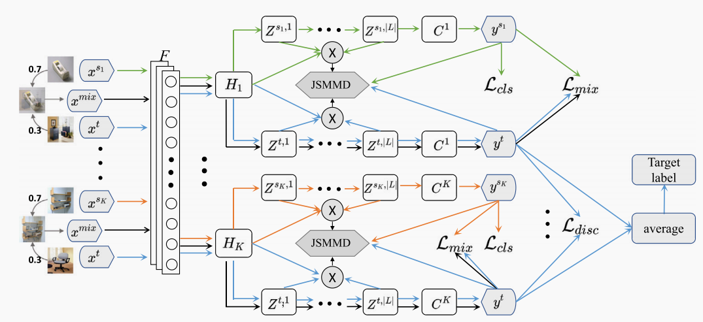
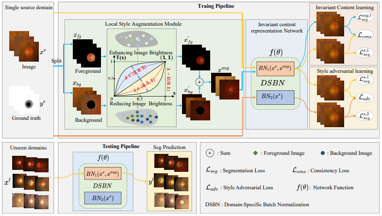
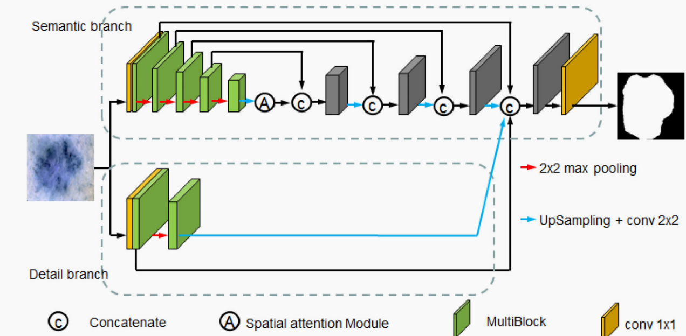

Zhiming Cheng
|
 |
{kind=link}
Biography
Hello, I’m Zhiming Cheng, an postdoctoral reasearcher at the School of Communication Engineering, Hangzhou Dianzi University. I received my Ph.D. degree in Control science and Engineering from the Hangzhou Dianzi University under the supervision of Prof. Chenggang Yan in 2024.
My research mainly focuses on computer vision, transfer learning and medical image analysis.
News
- 03/2024: One paper is accepted by Pattern Recognition 2024.
- 02/2024: One paper is accepted by Journal of Digital Imaging 2024.
- 03/2022: One paper is accepted by The Visual Computer 2022.
- 08/2020: One paper is accepted by IEEE ACCESS 2020.
- 12/2020: One paper is accepted by BIBM 2020.
- 09/2021: I’m joining Intelligent Information Processing Laboratory at Hangzhou Dianzi University as a Ph.D. student.
Publications
|  | Deep Joint Semantic Adaptation Network for Multi-source Unsupervised Domain Adaptation Zhiming Cheng, Shuai Wang+, Defu Yang, Jie Qi, Mang Xiao, Chenggang Yan Pattern Recognition 2024 PDF / Supp / Project |
|  | Invariant Content Representation for Generalizable Medical Image Segmentation Zhiming Cheng, Shuai Wang+, Yuhan Gao, Zunjie Zhu and Chenggang Yan Journal of Digital Imaging 2024 PDF / Supp / Project |
|  | Contour-aware semantic segmentation network with spatial attention mechanism for medical image Zhiming Cheng, Aiping Qu+ and Xiaofeng He The Visual Computer 2022 PDF / Supp Project |

|
A fast and accurate algorithm for nuclei instance segmentation in microscopy images Zhiming Cheng and Aiping Qu+ IEEE ACCESS 2020 PDF / Supp / Project |

|
An integration convolutional neural network for nuclei instance segmentation Aiping Qu, Zhiming Cheng+, Xiaofeng He, Xiaodong Li and Yue Li BIBM 2020 PDF / Supp / Project |
Academic Activities
Reviewer
- Program Committee Members for Conference: CVPR 2024, AAAI 2024/2023/2022, IJCAI 2024/2023, ECCV 2022.
© Zhiming Cheng | Last updated: February, 2024.